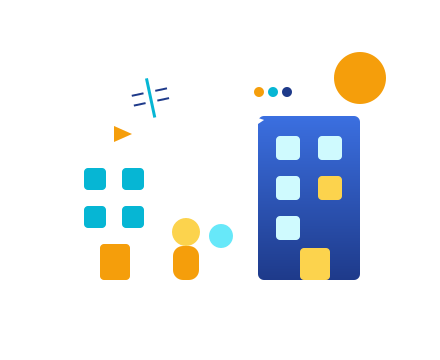

Cursos
Conheça os cursos
Descubra os cursos técnicos, a área de cada um e o que você vai aprender durante a formação.
Ver cursosComeçar em uma escola nova é empolgante, mas cheio de dúvidas. O IFC Conecta reúne tudo o que você precisa nas primeiras semanas: cursos, eventos e um guia prático do dia a dia.

3
cursos técnicos
6
passos para começar
+10
eventos por ano
1
portal com tudo reunido
Separamos os três assuntos que mais geram dúvidas em quem está chegando. Escolha por onde quer começar.
Descubra os cursos técnicos, a área de cada um e o que você vai aprender durante a formação.
Ver cursosFeiras, jogos e mostras culturais são ótimas formas de fazer amizades e conhecer o campus.
Ver eventosUm passo a passo simples com tudo o que você precisa resolver nos primeiros dias de aula.
Ver guiaTodo semestre chegam novos estudantes cheios de perguntas: onde pego o cartão da biblioteca? Como funciona o refeitório? Quando começam as atividades extras? Essas informações costumam estar espalhadas, o que deixa o começo mais confuso do que precisa ser.
A ideia do portal é simples: organizar tudo em páginas claras, com navegação fácil, para que qualquer calouro consiga se virar sozinho desde o primeiro dia.